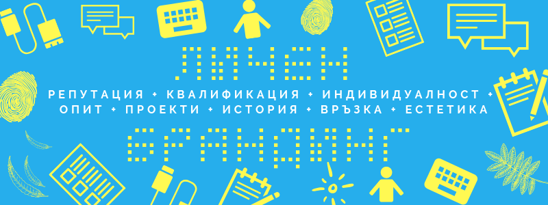

Личен брандинг: как да сте забележими и запомнящи се
В днешно време не е чудно, ако след като чуят или се запознаят с вас, хора, които имат нужда от такъв специалист, да потърсят името ви в Google или LinkedIn.
Личният брандинг помага както за да ви наемат, така и да се изкачвате по корпоративната стълбица.
След като за всяка позиция или поръчки се борят няколко еднакво квалифицирани кандидата, дори малки разлики може да са определящи.
Ако положите малко повече усилия, това ви позволява да докоснете повече животи, да разполагате с повече ресурси и да донесете повече красота в космоса.
Понякога това значи да отделяте по няколко минути дневно, за да помислите кой и как ви възприемат и да направите съответните стъпки, за да може имиджът ви да отговаря на желанията и бъдещите ви планове.
Личният брандинг се състои най- вече от вашата репутация и вашите предишни работи. Затова дейностите, които ви помагат да го изградите са свързани с представяне или изтъкване на това, което вече сте постигнали и в общуване с колеги, работодатели и хора от бранша, на които се възхищавате и с които може да имате взаимна полза.
Разкажете
За да ви опознаят трябва да разкажете вашата история и биография по възможно най- увлекателен и релевантен начин.
Важно е като ви попитат с какво точно се занимавате, като организатори на събитие ви помолят за кратко представяне или като ви впишат като автор на някакъв материал трябва да имате стегнато и интересно описание.
Не е нужно да споделяте всичко, но помислете какво искате да бъде едното нещо, с което да ви запомнят. Може би някакъв факт или събитие което показва защо се занимавате точно с това.
Най- конкретно и най-убедително е да имате странични проекти или други доказателства, че познавате индустрията и може да вършите работата.
Компетентността е базата, на която се гради кариерата ви, но за да имате истински успех трябва да сте забележими и запомнящи се. Не е достатъчно да сте само по- добри, бъдете различни.
Затова не се бойте да имате категорични и нестандартни мнения. Освен уникалността ви, това показна страстта и ангажираноста ви.
Не се бойте да отблъсквате или плашите хората, стига да не ги наранявате.
Ако имат нужда от помощта ви, клиентите или работодателите ще искат да ви опознаят и да ви се доверят, но не си измислите за да го направят. Да, може да представите опита си по различни начини в зависимост от целите ви, но не бъдете фалшиви, защото може да привлечете грешните хора, което е кофти и за вас и за тях.
И не забравяйте ефекта на простото излагане (mere exposure effect), който гласи че сме склонни да вярваме повече на хора които виждаме по-често, така че не изпускайте възможността да покажете уменията и ентусиазма си. Не чакайте брилянтността ви да бъде забелязана от само себе си.
Общувайте
Гадничко е стар познат да ви пише и да се окаже, че има молба и това е единственият им мотив. За да не поднасяте и вие такива неприятни изненади, свързвайте се редовно с бивши колеги и състуденти, тоест преди да трябва да ги молите за нещо.
Как да се присещате? Може и да звучи донякъде безчувствено, но и това може да го сложите в календара си. Това, че ботче ви напомня, не значи, че отношенията задължително са по-малко топли и човешки. Всичко наоколо е забързано и хаотично, така че всяка помощ е добра дошла.
Когато се престрашите, отделете необходимото време за да се запознаете какво става в живота им, да си припомните и да персонализирате посланието си. Пращайте статии или препоръки за книги или запознанства с ваши познати, с които имат общи интереси, за да им покажете, че мислите за тях.
Също когато общувате с клиенти и колеги (включително мениджъри), не забравяйте да поискате обратна връзка и препоръки. Добрата работа не се забелязва и награждава автоматично. От време на време, трябва да ги побутвате и да напомняте за амбициите си. Може да е полезно и за тях, примерно ако в компанията си търсят човек за някой по- отговорен пост, а не са обмисляли да ви го предложат преди да им напомните колко добре се справяте.
На обратната страна на монетата, поздравявайте колеги за назначения или повишения, препоръчвайте ги за постове, които са се отворили и за които сте научили дори ако ще ги загубите като подчинени, особено ако сте им мениджър. Винаги е полезно да имате надеждни сътрудници от други отедели, а ако не прогресират доста хора се отчайват и напускат. Опитайте се да промотирате любимите си хора, а не да си ги пазите като драконче съкровището. Така ще растете заедно и по- бързо. Носете положителни емоции! Пишете благодарствени бележки (може на картичка или на имейл), когато някой е допринесъл доста за някой проект или е дал всичко от себе си. Това важи както за сътрудници от вашия отдел, така и за партньори и най- вече за ваши подчинени, които може да зависят от преценката ви за да се ориентират как прогресират.
А и когато подържате повече връзки открехвате вратата на Вселената да ви поднесе късметлийски случайности, които са една от насладите на живота.
Но не се чувствайте длъжни те да са само със стари муцуни, а търсете и нови познанства. Понякога трябва да благодарим и да оставим зад гърба си някои хора било защото пътищата ни са се разклонили или защото нямаме достатъчно капацитет да обърнем нужното внимание на всички. Според британския антрополог Робин Дънбар може да поддържаме смислена връзка с около 150 души. Числото не е фиксирано и е различно за всеки, но за да се вместим понякога трябва да се отдалечим от едни, за да се освободи място за други обогатяващи ни хора. Така че ходете на събития: пуснете се по вълната, но не прескачайте от група на група като пеперуда. Струва си да търсите дълбочина без да очаквате незабавна полза. В почти всичко, отплата за вас идва или в бъдещето или никога, но нечий друг живот може да бъде променен и развеселен. А кармата действа по заобиколни пътища!
Също смятам, че се подценява присъединяването към местни професионални асоциации, гилдии или клубове. Ако не съществува точно каквото търсите за да се развивате и да научавате от професионалисти от областта ви, създайте го. Може да организирате закуска с трима вещи колеги два пъти в месеца да речем. В неформална обстановка може да обсъждате предизвикателства, които срещате, трикове и инструменти за продуктивност, както и тенденции. Ако имате повече време, бюджет и енергия, може да направите уъркшоп, фестивал или дори конференция.
Все пак менторите и вдъхновителите не е задължително да присъстват физически, за да се поучаваме от тях. Изберете си двама- трима професионалисти от вашата област, които да следвате онлайн- в LinkedIn или на друга платформа като twitter да речем. Четете книгите на най- блестящите умове в областта ви.
Сърфирайте
Не е необходимо да сте обсебени от себе си за да се тревожите как ви възприемат във виртуалния свят.
Колкото и да ни е неприятно да следим такива неща, онлайн присъствието е важно: социални мрежи като LinkedIn, портфолиото и новините за вас са важни инструменти за печеленето на нови клиенти или работодатели.
От време на време проверявайте какво излиза ако търсите името си в търсачките. Може да се окаже, че имате зъл двойник, така де съименник, или че просто сте оставили видима някоя снимка, която не ви показва в най-добрата ви светлина.
Или просто си настройте Google Alert, който да изскача когато се появи нова страница където се споменава името ви.
Друг момент е вашия имейл адрес: ако сте го създали в тинейджърските си години, нищо чудно да е нещо подобно на praskovka49 или sexyzvqrnaruto, тоест такива, с които трудно да се разделите колкото и излагащи да са. Обаче ако си създадете нов, можете да пренасочвате писмата от този адрес в пощата с която сте си свикнали за да не се налага да проверявате два пъти. Когато всичко е наред, получавате имейлите си веднага. Едва ли ще са чак толкова много, а само отвреме-навреме трябва да гледате в папката спам на другия акаунт.
Освен ако не е осъзната и обмислена част част от стратегията ви за израстване или печелене на клиенти, трупането на последователи в twitter и facebook не са от такова значение.
Граденето на репутация и доверие, от друга страна, може да ви носи само полза. Легендарната пънк певица Пати Смит казва: “Изградете добро име. Дръжте името си неопетнено. Не правете компромиси, не се притеснявайте дали ще направите куп пари или ще бъдете успешни. Бъдете загрижени да вършите добра работа. Защитете работата си и ако изградите добро име, в крайна сметка това име ще бъде собствена разменна монета.”
Затова помагайте, коментирайте по наболяли теми от сферата ви и отговаряйте на въпроси в групи, блогове и форуми за да покажете експертизата си и отдадеността си. А никога не се знае откъде ще изскочи някоя възможност.
Лесен начин и лицето ви да стане познато на всеки сайт, на който сте се вписали или сте оставили коментар, е да си направите регистрация в Gravatar, която да е свързана с имейл адреса ви.
Често препоръчват да си направите блог, но тъй като писането изисква доста време и концентрация, може да ви отклони от по- ефективни дейности. Затова според мен не е задължително, но всичко зависи от стратегията ви.
За да споделите експертизата си търсете места, където се събира публиката ви и дайте линк към портфолиото ви, където е представена същинската ви работа. Вариантите са много: може да пишете отвреме- навреме като гост, може да намерите къде да ви интервюират (традиционни медии, но също и подкасти), може да споделяте мнението си във форуми, LinkedIn публикации или twitter, може да записвате видео и да го качвате в Youtube. Замислете се кое ви идва най- лесно и се заемете с него. Не се преуморявайте за малка изгода.
Накратко, изберете си една платформа за споделяне на съдържание и една за комуникация. В наше време всеки пише дори да са само имейли, а всичко става по- безболезнено и бързо като не само споделяте, а и имате обратна връзка и контакт.
Довършете
Дяволът е в детайлите. Ето някои.
За да покажете по- точно какъв човек сте, сложете интересна снимка: усмихвайте се- “неутралното” изражение не ви кара да изглеждате сериозни, а навъсени; покажете се в обикновената ви среда- с лаптоп или сред инструментите ви; вмъкнете любим предмет, идол или филм, за да ви опознаят още преди да са ви срещнали; измислете смела концепция.
Ако сте куражлии, може да пуснете снимката си да бъде оценена на PhotoFeeler според критерии като компетентност или симпатичност.
Провете Facebook и махнете неподходящи изображения или сменете настройките, така че да са видими само за семейството примерно.
При снимките, а и другаде, най- лесно ще се отличите чрез стил и естетика.
Изберете си цвят, с който бихте желали да ви свързват и го ползвайте при комуникация, в имейл подписа си и за снимки в социалните мрежи, например на корица в LInkedIn. Става и с любим филтър. Огледайте се наоколо- към какви предмети, интериори и цветове сте привлечени естествено и се спрете на един или повече в зависимост за какво ви трябват.
Изберете си шрифт и го ползвайте когато създавате документи, презентации и доклади. Става и за авобиографията. Ако пък го ползвате в имейл с множество други замесени, вашият принос ще се откроява, а иначе когато пишете веднага ще е ясен подателя. Така посланието ви ще се свърже моментално с личността ви.
В крайна сметка личния бранд се гради на два принципа:
Поддържайте връзка с хората, с които искате да си сътрудничите!
Показвайте работата си!
Просто, но не лесно.
Ако проектите ви са по- амбициозни и засягат повече от кариерата ви, вижте безплатното обучение по Брандинг.